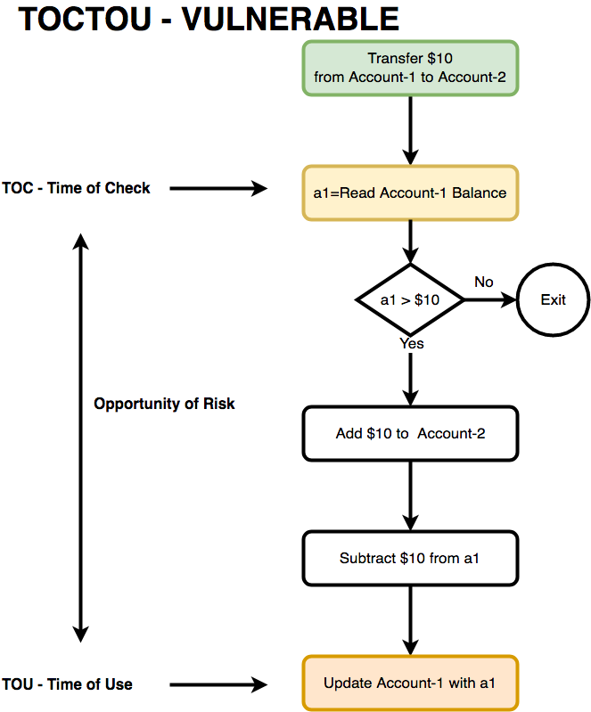
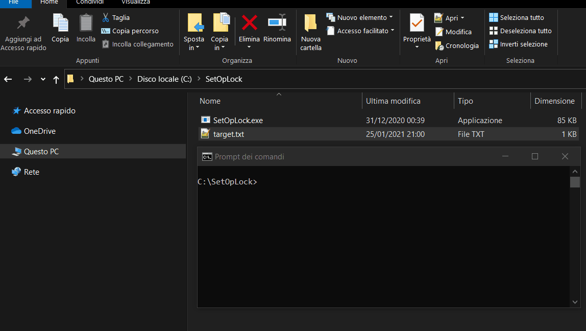
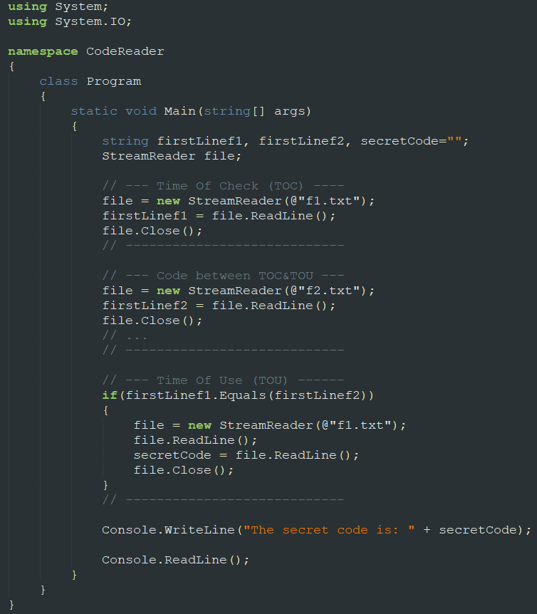
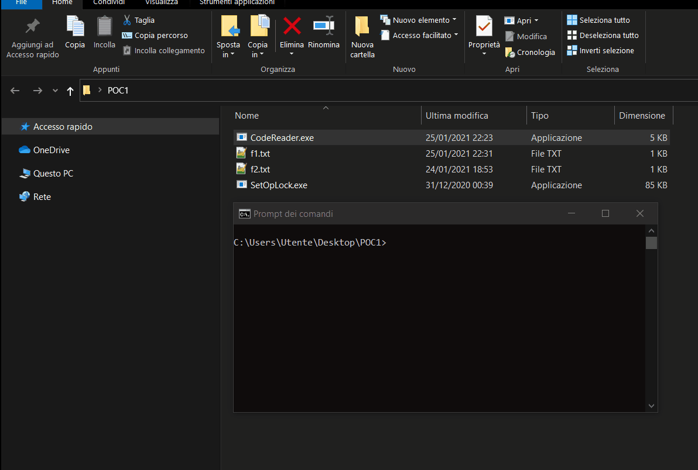
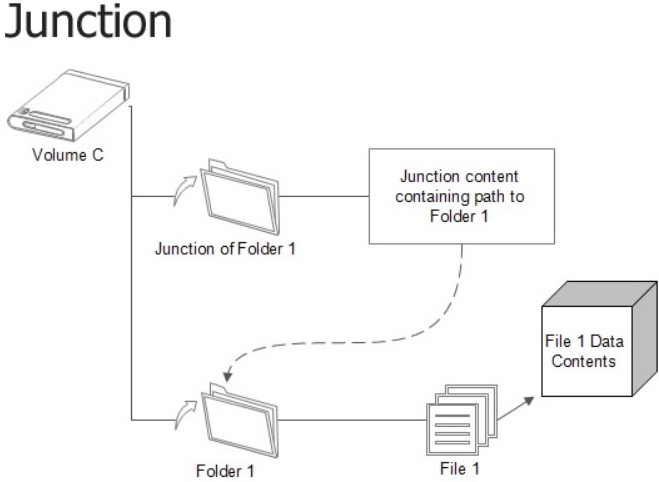
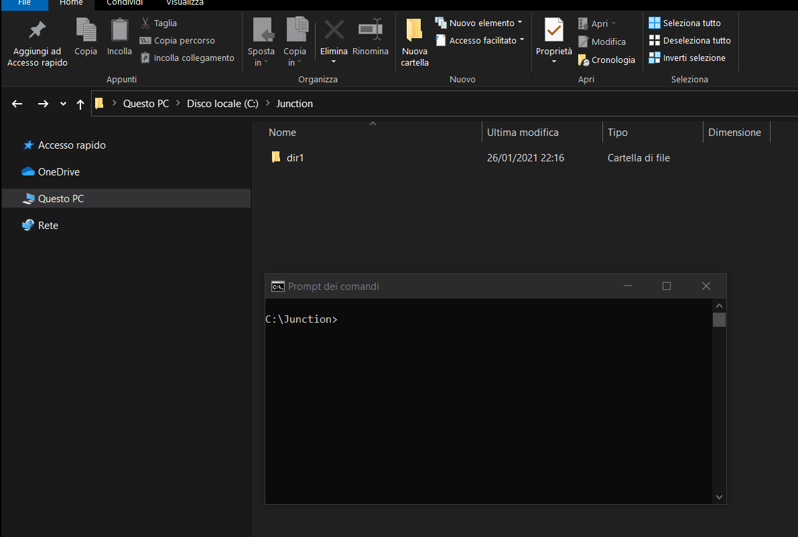
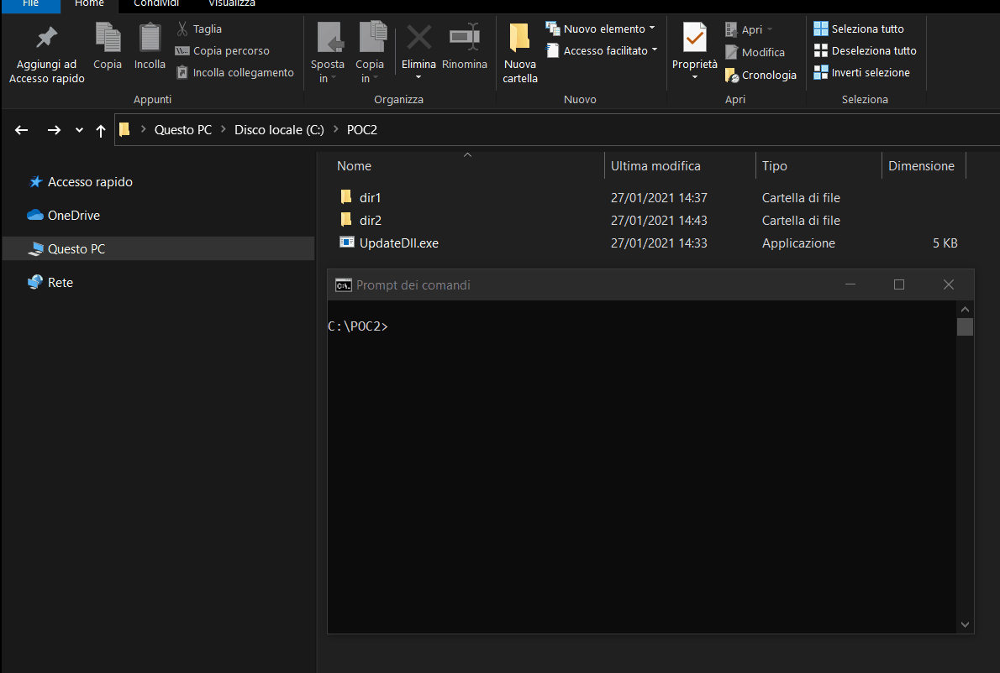
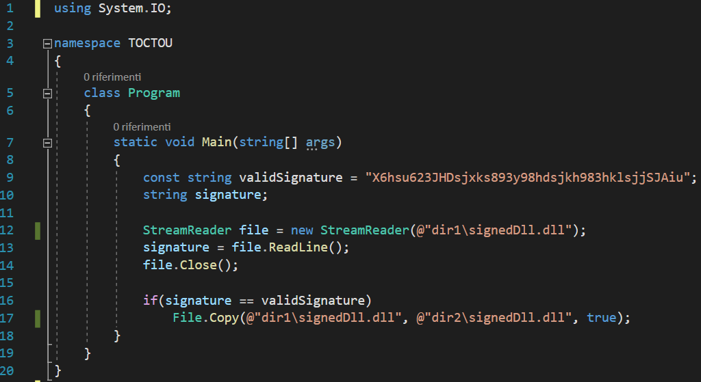
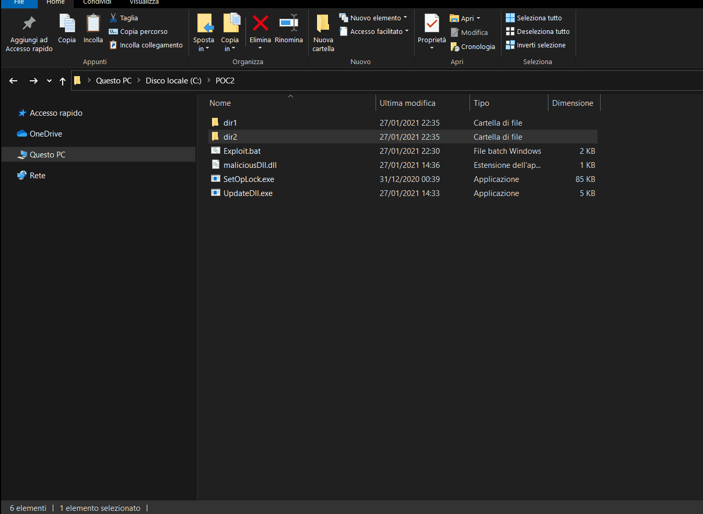

Exploiting TOCTOU vulnerability using OpLock and Junctions
What is a TOCTOU vulnerability? 🤔
TOCTOU stands for Time-Of-Check Time-Of-Use and is a software vulnerability which afflicts those programs that, before using a certain file (Time-Of-Use), perform a check on it (Time-Of-Check) but these two steps aren't necessarily performed in an atomic way (that is, sequentially and in not interruptible (by any other process that wants to access to the file) way), but could be performed in two distinct times.
This is a problem because, as I'll show in my following POCs, an attacker can perform particular malicious operations between the Time-Of-Check and the Time-Of-Use, that could lead to unexpected program behavior. You can see in the image below (taken from this site) the period between the TOC and the TOU.

Why should the program check the file (TOC) before performing operations on it (TOU)? There can be several reasons, for example:
- Verify that the file exists.
- Verify that the file is signed (e.g. a signed dll).
- Verify that the file is not corrupted.
- Verify that the file has the necessary security permissions to perform particular operations.
- More generally, verify that the file has the required privileges to perform particular operations.
What is an Opportunistic Lock (OpLock)? ⌛
In short, an Opportunistic Lock (OpLock) is a mechanism that allows to temporarily block access to a certain file. In general, access to a file, can be done in order to execute, read, write or delete it (or a combination of these operations); with an opportunistic lock we can block one or more of these types of access.
If we want to block any type of access to the file, the lock is called exclusive lock (shared and other exclusive locks can't be setted), otherwise, if we want to block only some types of access and allow others, it is called shared lock (multiple shared locks can co-exist and if one or more shared locks already exist, exclusive locks can't be setted).
Read this article for more information on the different types of OpLocks, and this to understand, through a nice example, what is the difference between a shared lock and an exclusive lock.
Fortunately James Forshaw 🙇 has already developed and made available to the whole community a tool that allows to set an OpLock on a file or directory, and then wait for user confirmation to release it.
We can set an exclusive OpLock on the target file using the following command: SetOpLock.exe C:\path\target.txt
We can set a shared OpLock on the target file using the following command: SetOpLock.exe C:\path\target.txt [rwd]
Read the readme file for more information about the basic usage.

We have a race to win! 🏃🥇
Let's try to combine the pieces... We have a program affected by a TOCTOU vulnerability; how can we exploit it? I said that between the TOC and the TOU the attacker can perform particular malicious operations; how?
The attacker has only a narrow window of vulnerability available (on the order of milliseconds), and must be able to execute its malicious operations before the program reaches the TOU. This situation is typically defined as race condition.
A race condition occurs when a software program depends on the timing of one or more processes (or threads) to works correctly. If a thread runs or finishes at an unexpected time, it may cause unpredictable behavior, such as incorrect output or a process deadlock.
In our case the participants in the race are the attacker and the vulnerable program: if the program reaches the TOU before the attacker performs his malicious operations, the application will win the race, and get a proper execution as a reward!!✔️🏆
But what if the application, between the TOC and the TOU, performs other operations such as, for example, reading some information from a certain file? Could the attacker, knowing the path of the file, win the race by setting an OpLock on it?
Exploiting TOCTOU vulnerability using OpLock to win the race 🏃🥇
The answer is yes!
I have developed a simple POC where an application (CodeReader.exe) which, trivially, reads the first line of a file (f1.txt), the first line of another file (f2.txt) and, if the line read from f1.txt is equal to the line read from f2.txt, then it reads and prints the second line of f1.txt on the screen.
CodeReader.exe is affected by a TOCTOU vulnerability: the TOC consists in the reading of f1.txt first line, and the TOU in the reading (and printing) of the f1.txt second line (these two steps aren't atomic; they're performed in two distinct moments of time).
Below the CodeReader.exe source code:

The problem is that between the TOC and the TOU (the narrow window of vulnerability), CodeReader.exe reads f2.txt first line. The attacker can exploit this moment by setting an OpLock on f2.txt, before CodeReader.exe is executed. When CodeReader.exe is executed and tries to read the f2.txt first line, it will be blocked by the OpLock, and the attacker can take advantage of this moment by modifying the secret code written in the f1.txt second line. At this point the attacker can release the OpLock, CodeReader.exe will be able to resume its normal execution and will read the f2.txt first line. Since the f1.txt first line is the same as f2.txt first line, CodeReader.exe will read and print the code written in the f1.txt second line, which has been tampered by the attacker. The following steps summarizes the operations just described, while the video shows how they are put into practice.
- The attacker sets an OpLock on f2.txt.
- CodeReader.exe is executed.
- CodeReader.exe reads the first line of f1.txt.
- CodeReader.exe tries to read the first line of f2.txt but it can't do it because the file is locked by the OpLock, so it goes into a waiting state.
- The attacker modifies the secret code written in the second line of f1.txt.
- The attacker releases the OpLock on f2.txt.
- CodeReader.exe can resume its execution and reads the first line of f2.txt.
- CodeReader.exe compares the first line of f1.txt with the first line of f2.txt.
- Since the two lines are equals, CodeReader.exe reads and prints the second line of f1.txt on the screen (tampered by the attacker).
- CodeReader.exe ends its execution.

Junctions 📁⏩📁
In the previous paragraph we've seen a simple example which illustrates how an OpLock can be the key tool to exploit a TOCTOU vulnerability and win the race. As you've probably guessed reading the title of this post, we can also use another tool (also combined with the OpLock) to exploit the TOCTOU vulnerability and win the race: the Junction.
The function of a junction is to reference a target directory and is implemented through reparse points. Junctions can be created to link directories located on different partitions or volume, but only locally on the same computer. Directory junctions do not take up additional space even though they are stored on the drive partition, and if the target is deleted, moved or renamed, all junctions which point to it will break, and continue to point to a non-existent directory.
Read this article (from which I took the image below) and this to learn more about the topic.

Clearly, we don't have to confuse the standard shortcuts (.lnk file) with the junctions (implemented through reparse points). ⚠️
In the following example I show:
- How a standard .lnk shortcut can't be managed like a traditional folder.
- How to create and use a junction.

Win the race with OpLock and Junctions
Sometimes, as shown in the previous POC, it's enough to use an OpLock to cause unexpected behavior to an application. Other times, as shown here, it's sufficient to use a junction and other links (in this case an Object Manager symbolic link). In still others, it's necessary to combine the use of an OpLock with one (or more) junction(s), and this is the case I want to talk about.
Scenario
- The user who is using the system has only StandardUser privileges, and wants to elevate his privileges (EoP aka LPE).
- dir2 is the directory where a system program (let's call it Prg) is installed (and runs with NT AUTHORITY\SYSTEM privileges). This directory contains several files necessary for Prg (to works properly), including signedDll.dll.
- The user, with StandardUser privileges, can trigger the Prg update.
- When the Prg update starts, the directory (dir1) is created and the new version of signedDll.dll is downloaded in it. This folder is created in a filesystem location where the user has full access rights (rwe).
- After completing the download of all updated files, the update program (UpdateDll.exe), among the various operations, replaces dir2\signedDll.dll with the updated one just downloaded (dir1\signedDll.dll). As the UpdateDll.exe developers know that the user could be a StandardUser and could access to the folder where the updated files are downloaded, they've implemented a protection system on the downloaded files, to prevent the user from tampering with them. In particular, signedDll.dll is a signed dll (in case the name is not clear enough... 😥). In this way the user ins't able (sure? 🤔) to perform a DLL Hijacking attack.
- If the signature check is successful, UpdateDll.exe replaces the old dir2\signedDll.dll with the updated dir1\signedDll.dll and runs Prg (which has now been updated and must load dir2\signedDll.dll to run properly).
The video below shows the proper Prg update performed by UpdateDll.exe. As you can see, dir1\signedDll.dll (whose signature is written in its first line) replaces the old dir2\signedDll.dll

Analyzing UpdateDll.exe source code 🔍👨💻
Analyzing the UpdateDll.exe source code shown below, we can see how the program accesses to dir1\signedDll.dll twice (the first time to read its signature (TOC), and the second time to copy it to dir2 directory (TOU)). Since these instructions aren't performed in an atomic way, we can try to exploit the TOCTOU vulnerability.

Attempt 1: exploiting UpdateDll.exe using OpLock ⌛
An idea to exploit the vulnerability is to proceed in a similar way to what was done in the first POC. We can set an OpLock on dir2\signedDll.dll before starting UpdateDll.exe so that, once started, it will confirm the signature but will be blocked during its attempt to replace dir2\signedDll.dll with dir1\signedDll.dll, because dir2\signedDll.dll is blocked by the OpLock. At this point the attacker can replace dir1\signedDll.dll with his malicious dll and release the lock on dir2\signedDll.dll. UpdateDll.exe will resume its execution and finally will be able to replace dir2\signedDll.dll with dir1\signedDll.dll (the malicious dll introduced by the attacker).
The following steps summarizes the operations just described.
- Set an OpLock on dir2\signedDll.dll.
- Execute UpdateDll.exe.
- UpdateDll.exe confirm the (original) dir1\signedDll.dll signature but it will be blocked during its attempt to replace dir2\signedDll.dll with dir1\signedDll.dll because of the OpLock.
- Replace dir1\signedDll.dll with our malicious dll (with the same name).
- Release the OpLock on dir2\signedDll.dll.
- dir2\signedDll.dll will be replaced by UpdateDll.exe with our malicious dll.
Everything is beautiful but StandardUser has no privileges on dir1, do you remember? 😒
So he can't set any OpLock on it. 😭
Attempt 2: exploiting UpdateDll.exe using Junctions 📁⏩📁
Another idea to exploit the vulnerability is to use a junction to trick UpdateDll.exe. We can create a FakeDir folder and copy dir1\signedDll.dll in it, then, after renaming dir1 to _dir1 (for example), we can create a junction (named dir1) to FakeDir. Now we can run UpdateDll.exe and, after the FakeDir\signedDll.dll signature check (TOC) but before copying dir1\signedDll.dll to dir2\signedDll.dll (TOU), we delete the junction (dir1), replace _dir1\signedDll.dll with our malicious dll and rename _dir1 to dir1. In this way, during the TOU, UpdateDll.exe will replace dir2\signedDll.dll with our malicious dll.
The following steps summarizes the operations just described.
- Create a FakeDir directory.
- Copy dir1\signedDll.dll to FakeDir.
- Rename dir1 to _dir1.
- Create dir1 junction to FakeDir.
- Execute UpdateDll.exe.
- After the TOC (and before the TOU):
- Delete dir1 junction.
- Replace _dir1\signedDll.dll with the malicious dll (with the same name).
- Rename _dir1 to dir1.
- UpdateDll.exe will replace dir2\signedDll.dll with our malicious dll.
Also in this case everything is beautiful, but I think that no human could be able to perform point 6 between the TOC and the TOU manually... 😵
You must have understood that we've to combine the use of the junction with the use of the OpLock. 💡
Attempt 3: exploiting UpdateDll.exe using Junctions and OpLock
To perform the previous point 6 between the TOC and the TOU, we can use an OpLock; it will give us all the time we need.
We can't set the OpLock on dir2 and in none of its file, but we can set it on FakeDir\signedDll.dll. The new steps are similar to the previous ones with the difference that, before running UpdateDll.exe (ex-point 5), we set the OpLock and release it only after completing ex-point 6.
The following list lists the steps in more detail:
- Create a FakeDir directory.
- Copy dir1\signedDll.dll to FakeDir.
- Rename dir1 to _dir1.
- Create dir1 junction to FakeDir.
- Set an OpLock on FakeDir\signedDll.dll.
- Execute UpdateDll.exe.
- UpdateDll.exe tries to read and verify the dir1\signedDll.dll signature but, since dir1 is a junction to FakeDir, UpdateDll.exe tries to read and verify the signature of FakeDir\signedDll.dll.
- UpdateDll.exe can't perform the previous step immediately because FakeDir\signedDll.dll is blocked by the OpLock, so it goes into a waiting state.
- Delete dir1 junction.
- Rename _dir1 to dir1.
- Copy the malicious dll (maliciousDll.dll) to dir1.
- Rename dir1\signedDll.dll to _signedDll.dll.
- Rename dir1\maliciousDll.dll to signedDll.dll.
- Close the OpLock on FakeDir\signedDll.dll.
- UpdateDll.exe comes out of the waiting state and can finally read and check the FakeDir\signedDll.dll signature.
- The check passed because FakeDir\signedDll.dll is a copy of the original dll (therefore it's signed correctly).
- UpdateDll.exe continues its execution and replace dir2\signedDll.dll with dir1\signedDll.dll (but now dir1\signedDll.dll is our malicious dll).
If everything goes well, in dir2 you should find the malicious dll (and I really hope you'll find it because i'm not going to write an eventual Attempt 4 😑).
Using the junction we can trick UpdateDll.exe, forcing it to check the signedDll.dll signature from an unexpected directory (FakeDir instead of dir1). In this way the check takes place in one directory (FakeDir), while the copy operation of the original dll takes place, at a later time, from the directory expected by UpdateDll.exe (dir1). Between reading and copying, thanks to the OpLock which temporarily blocks UpdateDll.exe, we can replace (in dir1) the original dll with the malicious one, which will then be copied to dir2 by UpdateDll.exe without further checks. 🥳🎉
I've automated the steps listed above in an exploit as a batch file; you can see its execution in the POC below.

Conclusion
TOCTOU vulnerability isn't always easy to recognize and prevent, although the following tools (and tips) can be good options to address and mitigate the problem:
- Source code static analysis tools (take a look here).
- Open the critical file only once and do everything you need through the file descriptor rather than the file name.
- Use one atomic operation containing the check (TOC) and the use (TOU) of the file.
Junctions are another tool that complicates things further, often they're sneaky and allows the attacker to produce unexpected application behavior. Finally, if we also consider the OpLocks, further possibilities open up for the attacker and the combinations of all these tools, help him to achieve his malicious purposes.
In particular, the ultimate goal of this post is to highlight how, through the combination of these tools it's possible to get an EoP, performing a series of predetermined steps (which could allow a dll hijacking, for example). The second POC takes a cue from CVE-2019-14743 (discovered by Vasily Kravets 🙇 (here the POC developed by Alexander Bittner)) and wants to put in evidence how many of the current vulnerabilities are exploited in a similar way to get an EoP.
Below you can find other Windows exploits, based on file link (e.g. junctions) and OpLock: